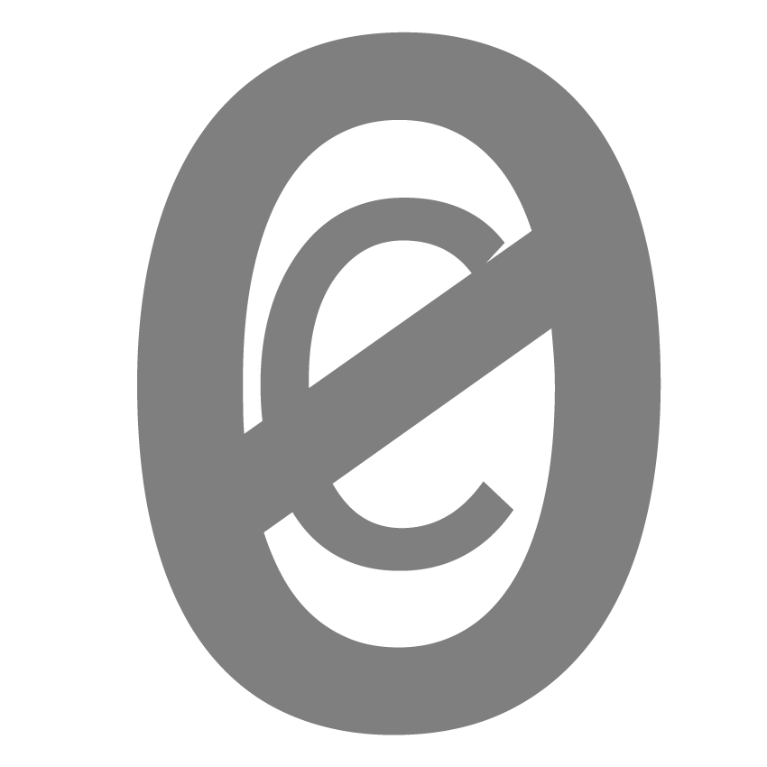

2014-06-25
（最新消息以本網站為準）
對於「公眾領域」，你是否仍感到陌生？
想知道目前國際「公眾領域」的現況？
還是想瞭解大家是如何運用這樣豐富的資源？
或是您有一批「公眾領域」的照片，希望找到有效率地方法，提供公眾利用！
為什麼國外有些典藏機構，願意將手上掌握的公眾領域資源釋放出來？
全球到底有哪些公眾領域的資源，要如何找尋？
在台灣，典藏單位的考量以及遇到的困難為何？
如果想瞭解上述提問，千萬別錯過於7月10日下午的「公眾領域實務座談與展示會」！
本活動將以「座談會＋展示會」的方式進行。
地 點：BOOKSHOW說書會（台北市信義區基隆路一段141號6樓之7）
活動時間：7/10（四）14：30 - 17：30
報名網址：http://cctw.kktix.cc/events/pd4pd (或直接透過下列表單報名)
活動完全免費，但名額有限，請盡速報名。
【上半場】座 談 會
座談會主持人：

莊庭瑞
台灣創用CC計畫共同主持人／中央研究院副研究員與談人：
李治安
政治大學法學院副教授／台灣創用CC計畫共同主持人

Mélanie Dulong de Rosnay
法國 CNRS 研究員來自法國 CNRS 的 Mélanie Dulong de Rosnay 博士，同時也是 COMMUNIA International Association on the Public Domain 的會長，著有「數位公眾領域：開放文化的基礎」 (The Digital Public Domain: Foundations for an Open Culture) 一書，對於公眾領域有許多實務上的經驗與思考，將與會分享她的觀點。
黃凱祥
國立臺灣歷史博物館圖書資源組小組長

張藝鴻
中央研究院民族所研究助技師
廖泫銘
中央研究院人文社會科學研究中心研究助技師
【下半場】實 務 展 示 會
包含 Mediagoblin 軟體套件、公眾領域資訊網站、公眾領域電子書工具、台灣堡圖數位庫藏等內容展示。 讓大家能快速了解如何使用公眾領域的平台、工具，並且知道自己在實務上可以怎麼運用和貢獻公眾領域。而已經在網路上提供公眾領域作品的個人或機構，也會在當天分享這些公眾領域素材。

柯俊如
台灣創用CC計畫 實習生
主題: PD4PD 平台展示
王家薰
台灣創用CC計畫技術人員
主題: Mediagoblin 工具展示（台灣堡圖）
張欽隆
台科大資工所博士候選人
主題: 轉換公眾領域文字檔／線上電子書工具
聯合主辨
本活動由台灣創用CC計畫（於中央研究院資創訊科技創新研究中心執行）、網絡行動科技有限公司、BOOKSHOW 說書會 聯合舉辦。PS.此活動亦提供公務人員終身學習時數3小時，請全程參與，並完成相關登錄程序。

「公眾領域之實務與藏庫」計畫
「公眾領域」(The Public Domain) ，一般用來指稱那些不受著作權法限制的著作。 公眾領域裡的著作，任何人都可以自由使用，不再受任何限制。
近年來，網路素材自由運用的議題逐漸受人重視，「公眾領域」就是討論焦點之一。2010 年起，每年 1 月 1 日為「公眾領域日」，各國都有響應的活動。知名的大學以及研究機構，如杜克大學與哈佛大學法學院，也進行關於公眾領域的研究。
有鑑於公眾領域的重要性，台灣創用CC計畫於2013年提出提出「公眾領域之實務與藏庫」計畫 ( Practices and Depositories for The Public Domain, 簡稱 PD4PD )，獲美國 Creative Commons 獎助，並與網絡行動科技有限公司、GNU MediaGoblin 軟體開發者三方共同合作，進行這項計畫的工作。
此計畫的目標在於推廣公眾領域的概念與實作：確保已歸入公眾領域的文化素材，其數位化成品可以被取得與再次使用，這將透過軟體工具、實務作法、以及社群發展來達成，讓公眾領域的素材可以更方便在網路上提供與取得。